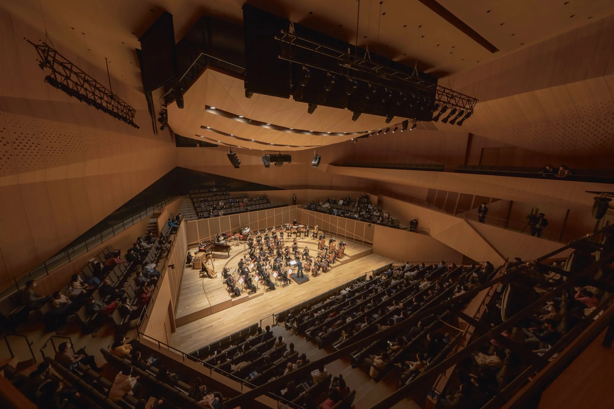

THE TIANJIN
JUILLIARD SCHOOL

The Tianjin Juilliard School (TJS) is a center for musical performance, practice, research, and interactive exhibitions—a cultural embrace between China and the United States in an era of increasingly frosty relations. For Juilliard, the performing arts center is an opportunity to bring its artistic and academic mission to a wider global audience, enabling partnerships with local music education institutions, such as the Tianjin Conservatory of Music, and professional orchestras, such as the Shanghai Symphony Orchestra. For Tianjin, Juilliard brings a much-needed cultural dimension to Binhai, the port city’s largely single-use business district. As the branch campus of the Juilliard School, TJS is the first performing arts institution in China to confer a U.S.-accredited master of music degree.
Defying the hermetic nature of typical conservatories, TJS is conceived as a highly porous extension of the civic realm that welcomes the public into the creation and presentation of music. Several pedestrian networks intersect the site, knitting together the high-speed railway station to the east, a park to the north, the town square to the south, and the Hai River waterfront to the west. These paths weave through immersive landscapes before converging on a light-filled, column-free lobby. Replete with grandstand seating, a café, and a tilt-up tree planter, this interior public spine allows student and visiting populations to mingle, relax, and witness impromptu performances. Five bridges overhead offer glimpses into educational spaces.
The lobby distributes concertgoers into all three public venues housed within the building’s faceted pavilions, including a 690- seat concert hall, a 299-seat recital hall, and a 225-seat black-box theater. Academic spaces support a graduate program in orchestral studies, chamber music, and collaborative piano; a Saturday precollege program for talented students between the ages of eight and eighteen; continuing education programs for professional musicians and music teachers; and public programs for music students of all ages. Collectively, the two-level glass bridges contain twelve classrooms, twenty-three teaching studios, and eighty-six practice rooms of diverse sizes. The bridges intersect to form double-height student lounges with panoramic views of the city and the Hai River.
The school uses leading-edge telecommunication and videoconferencing technologies to ensure a high degree of connectivity and collaboration between students and faculty at TJS and the Juilliard School in New York. Juilliard Imagination is a digitally connected exhibition space capable of hosting live-streamed concerts at both facilities, enabling visitors and students to experience music, dance, and drama through curated displays powered by interactive technology.
Project information
- SIZE (GSF)
- 350,000
- COMMISSION
- 2014
- GROUNDBREAKING
- June 15, 2017
- COMPLETION
- October 2020
Credits
- PARTNERS
- Charles Renfro
Benjamin Gilmartin
Elizabeth Diller - PROJECT LEADERS
- Ellix Wu
Brian Tabolt
Ayat Fadaifard
Heng-Choong Leong - DESIGNERS
- Andrés Macera
Yushiro Okamoto
Jack Solomon
David Chacon
Michael Robitz
Ling Zhang
Barry Beagen
Bo Liu
Eduardo Ponce
Andrew Bertics
External credits
- EAST CHINA ARCHITECTURAL DESIGN & RESEARCH INSTITUTE (ECADI)
- Executive Architect, Structural & MEP Engineer
- ARUP
- Structural Engineer, MEP/FP, Fire, Geothermal
- FRONT
- Facade Engineer
- JAFFE HOLDEN
- Acoustical Consultant
- FISHER DACHS ASSOCIATES
- Theater Design
- TILLOTSON DESIGN ASSOCIATES
- Lighting Designer
- HARGREAVES JONES
- Landscape Architect
- SHEN MILSON & WILKE
- AV / IT
- TRANSSOLAR
- Sustainability